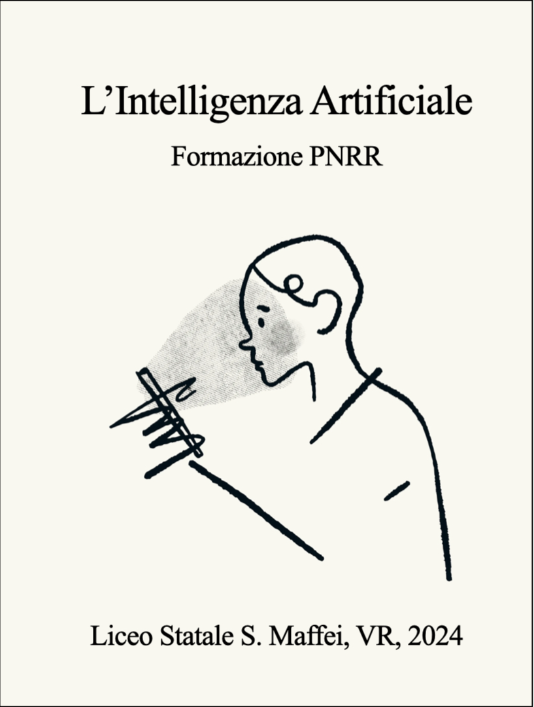

}
Home
Presentazione
Prof. Roberto Fattore
L'IA per la scuola
Prof.ssa Luisa Campedelli
Prof.ssa Francesca Chiecchi
Prof. Alessandro Conti
Prof.ssa Anna Dalfini
Prof.ssa Monica Giacomi
Prof.Carlos Palacios
Prof.ssa Silvia Varriale
Prof.ssa Mara Zimol
Cos'è l'IA
Prof. Paolo Olivato
Cosa non è l'IA
Prof. Daniele Mainente
Prof. Andrea Prato
Prof. Enrico Zanetti
Conclusioni
Prof. Roberto Fattore
